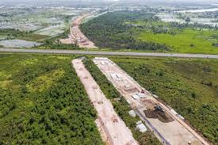

Kuala Lumpur, Malaysia
Kuala Lumpur adalah ibu kota dan kota terbesar di Malaysia. Kawasan Wilayah Persekutuan meliputi wilayah seluas 244 km2 (94 sq mi), dengan penduduk sekitar 1,6 juta jiwa (2010). Wilayah metropolitan Kuala Lumpur atau yang juga dikenal sebagai Lembah Klang, memiliki jumlah penduduk sebesar 5,7 juta jiwa. Kuala Lumpur merupakan wilayah metropolitan dengan pertumbuhan paling pesat di Malaysia, baik dalam jumlah penduduk maupun ekonomi.
Dari segi pendidikan, Kuala Lumpur mencapai tingkat melek huruf sebesar 97.5% pada tahun 2000, tertinggi di seluruh Malaysia.Di Kuala Lumpur terdapat 13 insititusi pendidikan tinggi, 79 sekolah menengah, 155 sekolah dasar, dan 136 TK. Terdapat beberapa institusi terkemuka di ibu kota yang sudah ada sejak satu abad lebih, seperti Sekolah Menengah Kebangsaan Victoria (1893); Methodist Girls’ School (1896); Methodist Boys’ School (1897); Convent Bukit Nanas (1899) dan Institusi St. John (1904). Di Kuala Lumpur juga berdiri Universitas Malaya sebagai universitas tertua di Malaysia sejak kemerdekaan negara.Contoh universitas lain yang ada di Kuala Lumpur adalah Universitas UCSI, Universitas Perubatan Antarabangsa, Universitas Terbuka Malaysia, Universitas Kuala Lumpur, Universitas Terbuka Wawasan, dan kampus cabang Universitas Kebangsaan Malaysia dan Universitas Teknologi Malaysia.

Dumai, Riau
Dumai merupakan salah satu kota dministratif di Provinsi Riau. Awal mula Kota Dumai merupakan sebuah dusun kecil di pesisir timur Provinsi Riau. Lalu mendapat pemekaran dari Kota Bengkalis yang kemudian kini mampu berdiri sendiri menjadi wilayah administratif Kota Dumai. Kota Dumai memiliki jumlah penduduk 268.000 jiwa dengan kepadatan rata-rata 156 jiwa/km2, serta laju pertumbuhan sebesar 3,7%.
Pada aspek pendidikan, fakta di lapangan menunjukkan bahwa berbagai indikator mutu pendidikan menunjukkan peningkatan kualitas pendidikan sangat dibutuhkan. Ketidakpuasan berjenjang juga terjadi, dimana kalangan SMP merasa bekal lulusan SD kurang mampu untuk memasuki SMP dan kalangan SMA merasa lulusan SMP tidak siap mengikuti pembelajaran di sekolah menengah atas, kalangan perguruan tinggi merasa bekal lulusan SMA belum siap untuk mengikuti perkuliahan. Berdasarkan data dari Badan Standar Nasional tahun ajaran 2009/2010 tingkat kelulusan siwa SMA pada ujian nasional untuk Kota Dumai berada pada peringkat sembilan dari 12 (dua belas) Kabupaten /Kota yang ada di Propinsi Riau. Pada aspek ekonomi Kota Dumai mengandalkan pada empat bidang, yakni perkebunan, kelautan, perdagangan, dan industri. Adanya pelabuhan lintas perdagangan internasional menjadikan Kota Dumai unggul dalam transportasi, termasuk dengan adanya Bandara Pinang Kampai. Namun, pertumbuhan ekonomi di Dumai belum optimal dirasakan oleh masyarakatnya. Di bidang pariwisata tak kalah menarik, Kota Dumai memiliki kawasan-kawasan unggulan untuk dikunjungi wisatawan baik lokal maupun internasional diantaranya yakni, kawasan konservasi di Kecamatan Sungai Sembilan, hutan wisata di Kecamatan Dumai Barat dan Dumai Timur, kawasan pantai Teluk Makmur di Kecamatan Medang Kampai dan Tasik Bunga Tujuh di Kecamatan Dumai Timur.